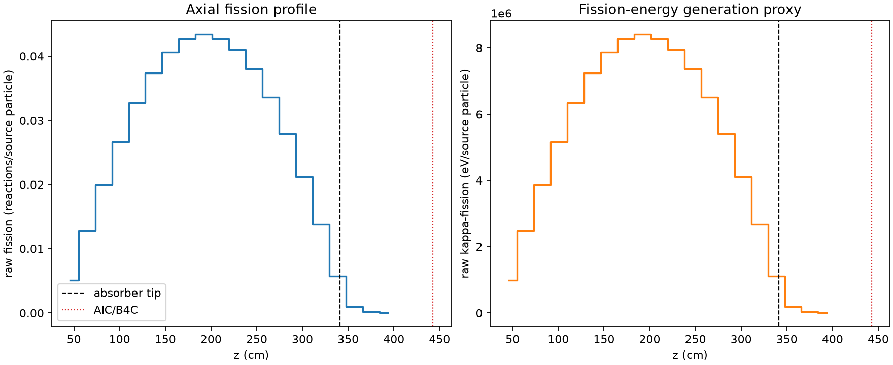
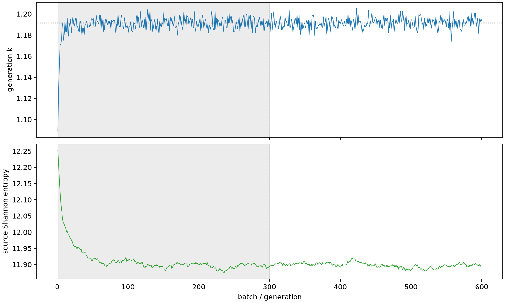

| field | value |
|---|---|
| experiment | V2-STAGE_128_OGRENCI_01-0010 |
| k | 1.1912618929814274 |
| MC standard error | 0.00018921080962015438 |
| seconds | 1066.0283570069878 |
| acceptance | not_assessed |
| convergence | review_required |
Completed is output integrity only; physical and statistical review required. Zero tallies do not prove zero production or zero uncertainty.
| diagnostic | value |
|---|---|
| geometric fuel voxels | 5280 |
| zero fission tally voxels | 0 |
| low signal fuel voxels | 171 |
| low signal fission share | 5.557845940453431e-05 |
| low signal kappa share | 5.560179483436938e-05 |
| important fission share | 0.9500063619798814 |
| previous filter included | 5109 |
| duration estimate s | 1562.5173488400023 |
| actual minus estimate s | -496.48899183301455 |
| fission relative MC error | statistics |
|---|---|
| all_geometric_fuel | {"voxels": 5280, "positive_mean_voxels": 5280, "zero_mean_voxels": 0, "undefined_relative_error_voxels": 0, "median": 0.009396792227298518, "p95": 0.13713709952206948, "maximum": 0.41001390450154557} |
| low_signal | {"voxels": 171, "positive_mean_voxels": 171, "zero_mean_voxels": 0, "undefined_relative_error_voxels": 0, "median": 0.22365828752054828, "p95": 0.2794773136138399, "maximum": 0.41001390450154557} |
| important_95pct | {"voxels": 3706, "positive_mean_voxels": 3706, "zero_mean_voxels": 0, "undefined_relative_error_voxels": 0, "median": 0.008253575323267585, "p95": 0.012657717434043298, "maximum": 0.016292494473953843} |
| outside_previous_filter | {"voxels": 171, "positive_mean_voxels": 171, "zero_mean_voxels": 0, "undefined_relative_error_voxels": 0, "median": 0.22365828752054828, "p95": 0.2794773136138399, "maximum": 0.41001390450154557} |
| kappa_fission relative MC error | statistics |
|---|---|
| all_geometric_fuel | {"voxels": 5280, "positive_mean_voxels": 5280, "zero_mean_voxels": 0, "undefined_relative_error_voxels": 0, "median": 0.009386019691401213, "p95": 0.13695503050397967, "maximum": 0.4093870182572461} |
| low_signal | {"voxels": 171, "positive_mean_voxels": 171, "zero_mean_voxels": 0, "undefined_relative_error_voxels": 0, "median": 0.22338098496976586, "p95": 0.27902416476129804, "maximum": 0.4093870182572461} |
| important_95pct | {"voxels": 3706, "positive_mean_voxels": 3706, "zero_mean_voxels": 0, "undefined_relative_error_voxels": 0, "median": 0.008245042004053705, "p95": 0.012643419146510163, "maximum": 0.016274028680187385} |
| outside_previous_filter | {"voxels": 171, "positive_mean_voxels": 171, "zero_mean_voxels": 0, "undefined_relative_error_voxels": 0, "median": 0.22338098496976586, "p95": 0.27902416476129804, "maximum": 0.4093870182572461} |
| axial bin | fission share | kappa-fission share |
|---|---|---|
| 1 | 0.010426224821966578 | 0.010426684552873655 |
| 2 | 0.026300119837361927 | 0.026299991343530758 |
| 3 | 0.04107063110211559 | 0.04107052760806917 |
| 4 | 0.05483489469277062 | 0.05483485613733907 |
| 5 | 0.06717171942158191 | 0.067171585234978 |
| 6 | 0.07675315823702446 | 0.07675304243113834 |
| 7 | 0.0834474904496304 | 0.08344736959257805 |
| 8 | 0.08781845740470279 | 0.08781823583534548 |
| 9 | 0.08908744360151714 | 0.08908742802265976 |
| 10 | 0.08789862296143595 | 0.08789843436208337 |
| 11 | 0.08429679488723751 | 0.08429634631672796 |
| 12 | 0.07810597680985018 | 0.07810554974160813 |
| 13 | 0.06902274037223882 | 0.06902266391131516 |
| 14 | 0.05734436853236504 | 0.057344104515489484 |
| 15 | 0.04362457734450219 | 0.043624448895991444 |
| 16 | 0.02845882199975156 | 0.028458752285281462 |
| 17 | 0.011724403518156543 | 0.011725330159903655 |
| 18 | 0.002076631605520404 | 0.00207748407353532 |
| 19 | 0.0004504705252862976 | 0.0004506731555383487 |
| 20 | 8.645187498410653e-05 | 8.649182401358905e-05 |
Histories include the inactive-to-active transition at batch 300. kappa-fission approximates fission energy production, not total heat deposition.

